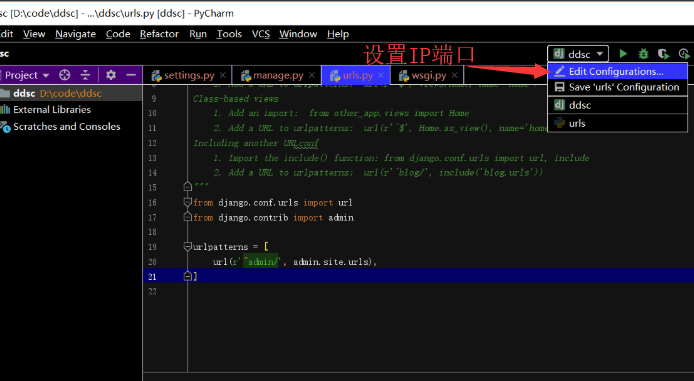
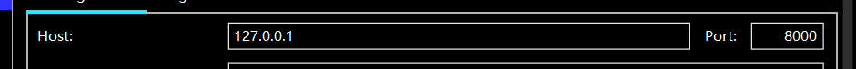

原文连接:https://www.cnblogs.com/xujunkai/p/11229514.html
一内容概要
1.HTTP协议
1.1简介
超文本传输协议（英文：Hyper Text Transfer Protocol，HTTP）是一种用于分布式、协作式和超媒体信息系统的应用层协议。HTTP是万维网的数据通信的基础。HTTP有很多应用，但最著名的是用于web浏览器和web服务器之间的双工通信。
HTTP的发展是由蒂姆·伯纳斯-李于1989年在欧洲核子研究组织（CERN）所发起。HTTP的标准制定由万维网协会（World Wide Web Consortium，W3C）和互联网工程任务组（Internet Engineering Task Force，IETF）进行协调，最终发布了一系列的RFC，其中最著名的是1999年6月公布的 RFC 2616，定义了HTTP协议中现今广泛使用的一个版本——HTTP 1.1。
- 想详细了解HTTP协议推荐书籍：
1.2HTTP协议概述
通常，由HTTP客户端发起一个请求，创建一个到服务器指定端口（默认是80端口）的TCP连接。HTTP服务器则在那个端口监听客户端的请求。一旦收到请求，服务器会向客户端返回一个状态，比如"HTTP/1.1 200 OK"，以及返回的内容，如请求的文件、错误消息、或者其它信息。
1.3 HTTP工作原理
HTTP协议定义Web客户端如何从Web服务器请求Web页面，以及服务器如何把Web页面传送给客户端。HTTP协议采用了请求/响应模型。客户端向服务器发送一个请求报文，请求报文包含请求的方法、URL、协议版本、请求头部和请求数据。服务器以一个状态行作为响应，响应的内容包括协议的版本、成功或者错误代码、服务器信息、响应头部和响应数据。
1.4 HTTP请求方法
GET
向指定资源发出“显示”请求，使用GET方法应该只用在读取数据。（通俗讲获取一个页面，资源）
POST
向指定资源提交数据，请求服务器进行处理(例如提交表单或者上传文件)（通俗讲向页面提交数据）
HEAD
与GET方法一样，都是向服务器发出指定资源的请求。只不过服务器将不传回资源的本文部分。它的好处在于，使用这个方法可以在不必传输全部内容的情况下，就可以获取其中“关于该资源的信息”（元信息或称元数据）。
PUT
向指定资源位置上传其最新内容。
DELETE
请求服务器删除Request-URI所标识的资源。
TRACE
回显服务器收到的请求，主要用于测试或诊断。
OPTIONS
这个方法可使服务器传回该资源所支持的所有HTTP请求方法。用'*'来代替资源名称，向Web服务器发送OPTIONS请求，可以测试服务器功能是否正常运作。
CONNECT
HTTP/1.1协议中预留给能够将连接改为管道方式的代理服务器。通常用于SSL加密服务器的链接（经由非加密的HTTP代理服务器）。
1.5 HTTP状态码
所有HTTP响应的第一行都是状态行，依次是当前HTTP版本号，3位数字组成的状态代码，以及描述状态的短语，彼此由空格分隔。
- 状态码分类
| 分类 | 分类描述 |
|---|---|
| 1** | 信息，服务器收到请求，需要请求者继续执行操作 |
| 2** | 成功，操作被成功接收并处理 |
| 3** | 重定向，需要进一步的操作以完成请求 |
| 4** | 客户端错误，请求包含语法错误或无法完成请求 |
| 5** | 服务器错误，服务器在处理请求的过程中发生了错误 |
- 状态码列表
| 状态码 | 状态码英文名称 | 中文描述 |
|---|---|---|
| 100 | Continue | 继续。客户端应继续其请求 |
| 101 | Switching Protocols | 切换协议。服务器根据客户端的请求切换协议。只能切换到更高级的协议，例如，切换到HTTP的新版本协议 |
| 200 | OK | 请求成功。一般用于GET与POST请求 |
| 201 | Created | 已创建。成功请求并创建了新的资源 |
| 202 | Accepted | 已接受。已经接受请求，但未处理完成 |
| 203 | Non-Authoritative Information | 非授权信息。请求成功。但返回的meta信息不在原始的服务器，而是一个副本 |
| 204 | No Content | 无内容。服务器成功处理，但未返回内容。在未更新网页的情况下，可确保浏览器继续显示当前文档 |
| 205 | Reset Content | 重置内容。服务器处理成功，用户终端（例如：浏览器）应重置文档视图。可通过此返回码清除浏览器的表单域 |
| 206 | Partial Content | 部分内容。服务器成功处理了部分GET请求 |
| 300 | Multiple Choices | 多种选择。请求的资源可包括多个位置，相应可返回一个资源特征与地址的列表用于用户终端（例如：浏览器）选择 |
| 301 | Moved Permanently | 永久移动。请求的资源已被永久的移动到新URI，返回信息会包括新的URI，浏览器会自动定向到新URI。今后任何新的请求都应使用新的URI代替 |
| 302 | Found | 临时移动。与301类似。但资源只是临时被移动。客户端应继续使用原有URI |
| 303 | See Other | 查看其它地址。与301类似。使用GET和POST请求查看 |
| 304 | Not Modified | 未修改。所请求的资源未修改，服务器返回此状态码时，不会返回任何资源。客户端通常会缓存访问过的资源，通过提供一个头信息指出客户端希望只返回在指定日期之后修改的资源 |
| 305 | Use Proxy | 使用代理。所请求的资源必须通过代理访问 |
| 306 | Unused | 已经被废弃的HTTP状态码 |
| 307 | Temporary Redirect | 临时重定向。与302类似。使用GET请求重定向 |
| 400 | Bad Request | 客户端请求的语法错误，服务器无法理解 |
| 401 | Unauthorized | 请求要求用户的身份认证 |
| 402 | Payment Required | 保留，将来使用 |
| 403 | Forbidden | 服务器理解请求客户端的请求，但是拒绝执行此请求 |
| 404 | Not Found | 服务器无法根据客户端的请求找到资源（网页）。通过此代码，网站设计人员可设置"您所请求的资源无法找到"的个性页面 |
| 405 | Method Not Allowed | 客户端请求中的方法被禁止 |
| 406 | Not Acceptable | 服务器无法根据客户端请求的内容特性完成请求 |
| 407 | Proxy Authentication Required | 请求要求代理的身份认证，与401类似，但请求者应当使用代理进行授权 |
| 408 | Request Time-out | 服务器等待客户端发送的请求时间过长，超时 |
| 409 | Conflict | 服务器完成客户端的PUT请求是可能返回此代码，服务器处理请求时发生了冲突 |
| 410 | Gone | 客户端请求的资源已经不存在。410不同于404，如果资源以前有现在被永久删除了可使用410代码，网站设计人员可通过301代码指定资源的新位置 |
| 411 | Length Required | 服务器无法处理客户端发送的不带Content-Length的请求信息 |
| 412 | Precondition Failed | 客户端请求信息的先决条件错误 |
| 413 | Request Entity Too Large | 由于请求的实体过大，服务器无法处理，因此拒绝请求。为防止客户端的连续请求，服务器可能会关闭连接。如果只是服务器暂时无法处理，则会包含一个Retry-After的响应信息 |
| 414 | Request-URI Too Large | 请求的URI过长（URI通常为网址），服务器无法处理 |
| 415 | Unsupported Media Type | 服务器无法处理请求附带的媒体格式 |
| 416 | Requested range not satisfiable | 客户端请求的范围无效 |
| 417 | Expectation Failed | 服务器无法满足Expect的请求头信息 |
| 500 | Internal Server Error | 服务器内部错误，无法完成请求 |
| 501 | Not Implemented | 服务器不支持请求的功能，无法完成请求 |
| 502 | Bad Gateway | 作为网关或者代理工作的服务器尝试执行请求时，从远程服务器接收到了一个无效的响应 |
| 503 | Service Unavailable | 由于超载或系统维护，服务器暂时的无法处理客户端的请求。延时的长度可包含在服务器的Retry-After头信息中 |
| 504 | Gateway Time-out | 充当网关或代理的服务器，未及时从远端服务器获取请求 |
| 505 | HTTP Version not supported | 服务器不支持请求的HTTP协议的版本，无法完成处理 |
1.6 URL
超文本传输协议（HTTP）的统一资源定位符，从因特网获取信息的五个基本元素包括在一个简单的地址中。

- 传送协议
- 层级URL标记符号【//】
- 服务器（通常域名，有时为IP地址）
- 端口号（以数字方式表示，HTTPS 是443 HTTP 是80。可省略）
- 路径（以“/”字符区别路径中的每一个目录名称）
- 查询（GET模式下窗口参数，以"?"字符为起点，每个参数哦以"&"隔开）
- 片段，以“#”字符为起点
1.7HTTP请求格式(浏览器 发出请求----->服务器)
- 请求格式：
- 示例：
#请求方式
请求行：请求“get”方法 url路经 协议版本
请求头："key1":"value1"\r\n(类似键值对)
"key2":"value2"\r\n
...
响应体： 数据1.8 HTTP响应格式(服务器响应(response)----->浏览器)
- 响应格式：
- 示例：
#响应方式
响应行：协议版本 状态码 状态描述\r\n
响应头："key1":"value1"\r\n(类似键值对)
"key2":"value2"\r\n
...
响应体： 数据2. web框架
2.1.一个简单的web框架
import socket
# 创建一个socket套接字
sk = socket.socket()
# 绑定IP和端口
sk.bind(("127.0.0.1",8888))
# 设为监听对象
sk.listen(5)
while True:
conn,_ = sk.accept()
#接收数据
data = conn.recv(1024)
print(data)
# 返回数据
conn.send(b"HTTP/1.1 200 OK\r\n\r\n<h1>hello world</h1>")
#断开连接
conn.close()
# 浏览器访问127.0.0.1:8888 会打印hello world2.2 函数实现一个简单web框架
import socket
# 创建一个socket对象
sk = socket.socket()
# 绑定IP和端口
sk.bind(('127.0.0.1', 8000))
# 监听
sk.listen(5)
# 等待连接
def index(url):
ret = "<h1>index!</h1>({})".format(url)
return ret.encode("utf-8")
def home(url):
ret = '<h1>home!</h1>({})'.format(url)
return ret.encode('utf-8')
list1 = [("/index",index),("/home",home)]
while True:
conn,addr = sk.accept()
data = conn.recv(1024)
data = data.decode("utf-8")
url = data.split(' ')[1]
conn.send(b'HTTP/1.1 200 OK\r\n\r\n')
func = None
for i in list1:
if url == i[0]:
func = i[1]
break
if func:
ret = func(url)
else:
ret = b"<h1>404 not found!</h1>"
conn.send(ret)
#断开连接
conn.close()- 通过网页访问 http://127.0.0.1:8000/home，可得到如下效果：
2.3 通过返回HTML页面
import socket
# 创建一个socket对象
sk = socket.socket()
# 绑定IP和端口
sk.bind(('127.0.0.1', 8080))
# 监听
sk.listen(5)
# 等待连接
def index(url):
with open(r'G:\homework\day52Djongo\index.html','rb') as f:
ret = f.read()
return ret
def home(url):#打开.html文件,读取出来返回读取内容
with open(r'G:\homework\day52Djongo\home.html','rb') as f:
ret = f.read()
return ret
list1 = [
("/index",index),
("/home",home)
]
while True:
conn,addr = sk.accept()
data = conn.recv(1024)
data = data.decode('utf-8')
url = data.split(' ')[1]
conn.send(b'HTTP/1.1 200 OK\r\n\r\n')
print(url)
func = None
for i in list1:
if url == i[0]:
func = i[1]
print(func)
break
if func:
res = func(url)
else:
res = b"<h1>404 not found!</h1>"
conn.send(res)
conn.close()
2.4 一个简单的返回动态网页
#!/usr/bin/env python
# -*- coding:utf-8 -*-
"""
Xu Junkai
"""
import socket
import time
# 创建一个socket对象
sk = socket.socket()
# 绑定IP和端口
sk.bind(('127.0.0.1', 8080))
# 监听
sk.listen(5)
# 等待连接
def index(url):
with open(r'G:\homework\day52Djongo\index.html','rb') as f:
ret = f.read()
return ret
def home(url):
with open(r'G:\homework\day52Djongo\home.html','rb') as f:
ret = f.read()
return ret
def timer(url):#返回当前时间
with open(r'G:\homework\day52Djongo\timer.html','r',encoding='utf-8') as f:
ret = f.read()
now = time.strftime('%H:%M:%S')
data = ret.replace("xxtimexx",now)
return data.encode('utf-8')
list1 = [
("/index",index),
("/home",home),
("/timer",timer)
]
while True:
conn,addr = sk.accept()
data = conn.recv(1024)
data = data.decode('utf-8')
url = data.split(' ')[1]
conn.send(b'HTTP/1.1 200 OK\r\n\r\n')
print(url)
func = None
for i in list1:
if url == i[0]:
func = i[1]
print(func)
break
if func:
res = func(url)
else:
res = b"<h1>404 not found!</h1>"
conn.send(res)
conn.close()
2.5 wsgiref模块应用
WSGI就是一种规范，它定义了使用Python编写的web应用程序与web服务器程序之间的接口格式，实现web应用程序与web服务器程序间解耦。
常用的WSGI服务器有uwsgi、Gunicorn。而Python标准库提供的独立WSGI服务器叫wsgiref，Django开发环境用的就是这个模块来做服务器。wsgiref(测试用) uwsgi(线上用)。
import time
from wsgiref.simple_server import make_server
def index(url):
with open(r'G:\homework\day52Djongo\index.html', 'rb') as f:
ret = f.read()
return ret
def home(url):
with open(r'G:\homework\day52Djongo\home.html', 'rb') as f:
ret = f.read()
return ret
def timer(url):
with open(r'G:\homework\day52Djongo\timer.html', 'r', encoding='utf-8') as f:
ret = f.read()
now = time.strftime('%H:%M:%S')
data = ret.replace("xxtimexx", now)
return data.encode('utf-8')
list1 = [
("/index/", index),
("/home/", home),
("/timer/", timer)
]
def run_server(environ,start_response):
start_response("200 OK",[("Content-Type","text/html;charset=utf8"),])
url = environ["PATH_INFO"]#获取用户输入URL
print(url)
func = None
for i in list1:
if i[0] == url:
func = i[1]
break
if func:
response = func(url)
else:
response = b"404 not found!"
return [response,]
if __name__ == "__main__":
httpd = make_server("127.0.0.1",8080,run_server)
print("waitting...")
httpd.serve_forever()#执行函数2.6jinjia2模块
上面的代码实现了一个简单的动态，我完全可以从数据库中查询数据，然后去替换我html中的对应内容，然后再发送给浏览器完成渲染。 这个过程就相当于HTML模板渲染数据。 本质上就是HTML内容中利用一些特殊的符号来替换要展示的数据。 我这里用的特殊符号是我定义的，其实模板渲染有个现成的工具。
- 示例：
<!DOCTYPE html>
<html lang="zh-CN">
<head>
<meta charset="UTF-8">
<meta http-equiv="x-ua-compatible" content="IE=edge">
<meta name="viewport" content="width=device-width, initial-scale=1">
<title>Title</title>
</head>
<body>
<h1>姓名：{{name}}</h1>
<h1>爱好：</h1>
<ul>
{% for hobby in hobby_list %}
<li>{{hobby}}</li>
{% endfor %}
</ul>
</body>
</html>from wsgiref.simple_server import make_server
from jinja2 import Template
def index(url):
# 读取HTML文件内容
with open("index2.html", "r", encoding="utf8") as f:
data = f.read()
template = Template(data) # 生成模板文件
ret = template.render({'name': 'xjk', 'hobby_list': ['唱', '跳', 'rap']}) # 把数据填充到模板中
return bytes(ret, encoding="utf8")
def home(url):
with open("home.html", "r", encoding="utf8") as f:
s = f.read()
return bytes(s, encoding="utf8")
# 定义一个url和实际要执行的函数的对应关系
list1 = [
("/index/", index),
("/home/", home),
]
def run_server(environ, start_response):
start_response('200 OK', [('Content-Type', 'text/html;charset=utf8'), ]) # 设置HTTP响应的状态码和头信息
url = environ['PATH_INFO'] # 取到用户输入的url
func = None
for i in list1:
if i[0] == url:
func = i[1]
break
if func:
response = func(url)
else:
response = b"404 not found!"
return [response, ]
if __name__ == '__main__':
httpd = make_server('127.0.0.1', 8090, run_server)
print("我在8090等你哦...")
httpd.serve_forever()
2.7小结：
- 自己实现一个简单web框架功能具备以下条件：
- 1.socket收发消息 -wsgiref(测试用) uwsgi(线上用)
- 2.根据不同路径返回不同内容
- 3.返回动态页面（字符串的替换） 可以用jinja2
- 我们熟知的框架django有2和3功能。flask:有2功能，tornado:1,2,3功能都有，并且是异步非阻塞。
3.django
3.1 django的下载
- 方法一：利用终端输入:pip install Django ==1.11.21 -i https://pypi.tuna.tsinghua.edu.cn/simple
- 方法二：pycharm下载 https://www.djangoproject.com/ 下载
推荐使用1.11版本，因为1.11版本是最后支持python2.7
创建项目1：
预先看Django必须在默认环境变量里。
第一步：先创建空文件夹
第二步：右键点击：Git Bash Here
第三步：输入django-admin

第四步：django-admin startproject mysite 创建项目
manage.py:管理文件，执行与项目相关文件，通过manage操作
第五步：在manager.py文件夹路径上 shift+鼠标右键 点击在此处打开powershell
终端输入python manage.py runserver
也可自定义IP端口：
法1：python36 manage.py runserver 80
法2：python36 manage.py runserver 0.0.0.0:80 （在settings文件内设置ALLOWED_HOSTS=["*"] 别人访问你的IP加端口可以直接访问的网页）
在网页输入127.0.0.1:8000(默认IP端口)
1.命令行
找一个文件夹存放项目文件：
打开终端（或git）
django-admin startproject 项目名称
表示连接接成功。
2.pycharm创建项目：
第一步：点击New Project
第二步：
第三步：

第四步：设置端口

（在pycharm中会自动生成.idea文件，如果是别人的项目先删除.idea再打开项目）从pycharm打开项目要从项目根目录打开。
在pycharm创建项目比git或终端创建项目多template文件夹。
第五步：启动项目
3.2 在Django创建一个字符串
#urls.py
from django.conf.urls import url
from django.contrib import admin
from django.shortcuts import HttpResponse,render
def index(request):
return HttpResponse("index")
urlpatterns = [
url(r'^admin/', admin.site.urls),
url(r'^index/', index),#第二个index为函数，第一个index为网页显示路径默认127.0.0.1:8000/index/
]
3.3在Django创建一页面
from django.conf.urls import url
from django.contrib import admin
from django.shortcuts import HttpResponse,render
def index(request):
return render(request,'index.html')#html文件都放在templates
urlpatterns = [
url(r'^admin/', admin.site.urls),
url(r'^index/', index),
]
pycharm已经给设置好了路径
settings.py
BASE_DIR = os.path.dirname(os.path.dirname(os.path.abspath(__file__)))#当前项目根目录
TEMPLATES = [
{
'BACKEND': 'django.template.backends.django.DjangoTemplates',
'DIRS': [os.path.join(BASE_DIR, 'templates')]
,
'APP_DIRS': True,
'OPTIONS': {
'context_processors': [
'django.template.context_processors.debug',
'django.template.context_processors.request',
'django.contrib.auth.context_processors.auth',
'django.contrib.messages.context_processors.messages',
],
},
},